Les graphes : définitions et vocabulaire
Problème des sept ponts de Königsberg
La ville de Königsberg (aujourd'hui Kaliningrad) est construite autour de deux îles situées sur le Pregel et reliées entre elles par un pont. Six autres ponts relient les rives de la rivière à l'une ou l'autre des deux îles, comme représentés sur le plan ci-dessus.
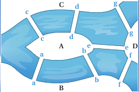
Le problème consiste à déterminer s'il existe ou non une promenade dans les rues de Königsberg permettant, à partir d'un point de départ au choix, de passer une et une seule fois par chaque pont, et de revenir à son point de départ, étant entendu qu'on ne peut traverser le Pregel qu'en passant sur les ponts.
Le mathématicien Leonhard Euler donna la solution de ce problème en utilisant les prémices de ce qu'on appelera Théorie des graphes
Graphes orientés et non-orientés
Graphe non orienté et vocabulaire
Un Graphe \(G\) est la donnée de d'un ensemble fini de nœuds(nodes en anglais) ou sommets (vertices en anglais) reliés entre eux par des liens (edges en anglais).
Si les liens sont :
-
bidirectionnels (on peut les emprunter dans les deux sens), le graphe sera alors appelé non-orienté. On parlera alors de nœuds et les liens seront appelés arêtes, et représentés par des segments ;
-
unidirectionnels (on peut les emprunter dans un seul sens), le graphe sera alors appelé orienté. On parlera alors de sommets et les liens seront appelés arcs, et représentés par des flèches.
Graphe du problème des ponts de Königsberg
Le graphe suivant est un représentant du problème des ponts de Königsberg :
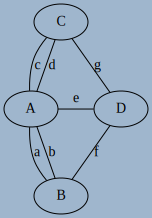
- Les ponts pouvant être franchis dans les deux sens, le graphe est non-orienté.
- Les différentes zones (berges et iles) sont les sommets \(A, B, C, D\) du graphe.
- les différents ponts sont les arêtes \(a, b, c, d, e, f, g\).
On dira qu'il s'agit d'une représentation, car la forme du graphe n'est pas importante. Les dessins ci-dessous représentent le même graphe :
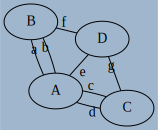
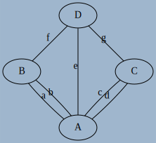
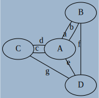
Graphe d'état d'un processus
Dans le cours sur les processus, nous avons vu le schéma suivant :

- Le graphe est orienté
- Les différentes états sont les sommets
départ,Prêt,Elu,Bloquéetterminé. - les différentes transitions sont les arcs
Réveil,Élection,Blocage,DéblocageetFin.
Voisinage
Si il existe un arc d'un sommet \(s\) à un sommet \(t\), on dit que \(t\) est adjacent à \(s\), où que \(t\) est un voisin de \(s\).
Exemple
Dans le graphe ci-dessous :
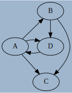
Aa pour voisinsB,CetD;Ba pour voisinsDetC;Cn'a aucun voisin ;Da pour voisinA.
Divers vocabulaire
- L'ordre d'un graphe \(G\) est le nombre de sommets qui composent ce graphe, et est noté \(n = ord(G)\).
- La taille d'un graphe est le nombre d'arcs/arêtes qui le composent.
- Le degré d'un sommet est le nombre d'arêtes dont ce sommet est une extrémité.
- On dira qu'un graphe est complet si tous ses sommets sont adjacents les uns avec les autres.
- On dira qu'un sommet est isolé s'il n'est relié a aucun autre sommet.
- On parlera de boucle lorsqu'un arc ou une arête a ses deux extrémités sur le meme sommet.
- Un graphe est simple lorsqu’ un graphe n’a aucune boucle et si deux arêtes ne relient jamais les mêmes paires de sommets.
Exemple : graphe de recherche de texte
On considère le graphe suivant :
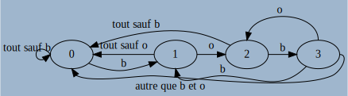
- Ce graphe est d'ordre 4 et de taille 9.
- Le noeud
2est de degré 4 - Ce graphe n'est pas complet car le noeud
2n'est pas pas relié à1. - Il y a une boucle au noeud
0, qui est donc d'ordre 6. - Aucun sommet n'est isolé.
Aventuriers du rail
« Les aventuriers du Rail » est un jeu de plateau qui a pour but de relier les gares de différentes villes sur une carte préexistante, pour ainsi créer son réseau ferroviaire au détriment des autres joueurs. Il existe différentes versions du jeu, la carte ci-dessous étant la carte de la version Europe.
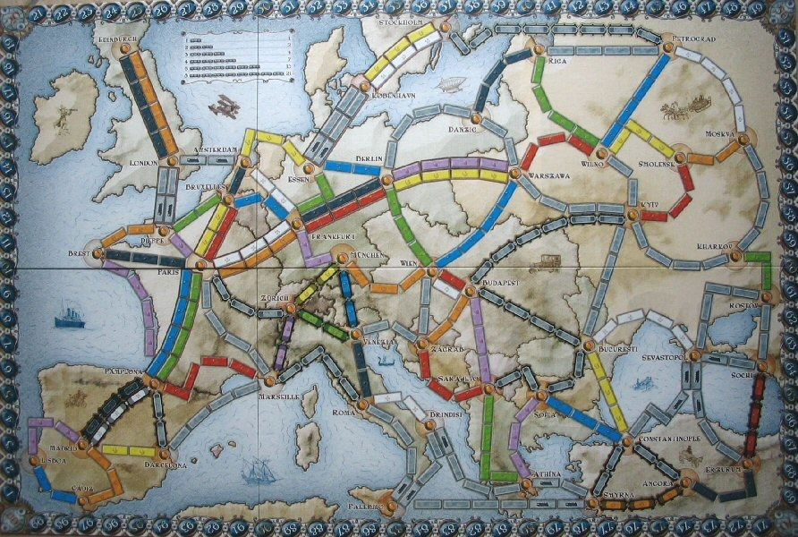
Une telle carte peut-être modélisée par un graphe. On en donne ci-dessous une partie en ayant extrait une partie des liaisons ferroviaires
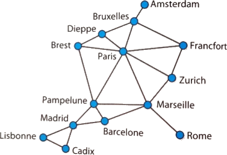
- A quoi correspond chacun des sommets ? chaque arête ?
- Quel est l’ordre du graphe ? Quelle est sa taille ?
- Quel est le degré de Paris ? de Rome ? de Marseille ?
- Comment peut-on interpréter les résultats de la question 3 ?
- Ce graphe est-il complet ?
A venir !
Région Midi-Pyrénées
On donne ci-dessous un extrait de la carte de la France administrative ( avant remaniement des régions...). On s’intéresse à la région Midi-Pyrénées et aux huit départements qui la composent. On s'intéresse aux frontières communes entre les départements de cette région.

- Représenter cette carte par un graphe mettant en évidence ce découpage.
- A quoi correspond chacun des sommets ? chaque arête ?
- Quel est l'ordre du graphe ? sa taille ?
- Ce graphe est-il complet ?
- Déterminer le degré de chaque sommet.
Une conjecture su les graphes non-orientés
-
On considère l’échiquier \(3 \times 3\) ci-dessous dans lequel on s’intéresse au déplacement du cavalier noir.

- Représenter par un graphe cet échiquier, les sommets étant les cases de l'échiquier, et les arêtes représentant les déplacements possibles du cavalier.
- Quel est l'ordre de ce graphe ?
- Ce graphe est-il complet ?
- Que peut-on dire du sommet \(b2\) ?
- Compléter le tableau des degrés des sommets du graphe.
- Calculer la somme des degrés des sommets ainsi que le nombre d'arêtes.
-
Pour chacun des graphes suivants, calculer la somme des degrés des sommets ainsi que le nombre d'arêtes, puis émettre une conjecture :
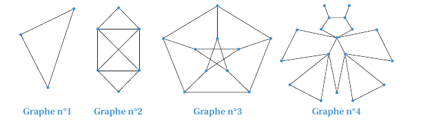
A venir !
Lemme dit « des poignées de main»
La somme des degrés des sommets d’un graphe non orienté est égale au double du nombre d’arêtes du graphe.
Lorsqu’on additionne les degrés des sommets, chaque arête est comptée deux fois, une fois pour chaque extrémité.
Les poignées de main
Les vingt-quatre maires des vingt-quatre communes de l’île de la Réunion se sont donné rendez-vous lors de l’assemblée générale de l’Association des Maires du Département de la Réunion (AMDR). À cette occasion, chaque maire serre la main de tous les autres maires. Quel est le nombre de poignées de mains échangées ?
A venir !
Hors programme : le langage dot
Il existe un ensemble d'outils informatiques spécialement dédiés à la création de graphes : GraphViz. Il en existe de nombreuses versions, mais vous pouvez en trouver une version en ligne ici, avec le graphe de l'exemple précédent comme exemple d'utilisation du langage.
pour s'amuser un peu
Créer le graphe orienté suivant :
- les sommets sont les nombres de 2 à 12 ;
- un arc existe entre
aetbsi et seulement siaest un multiple deb.
La solution ici
Graphes pondérés
Parfois il est nécessaire d'associer une valeur aux arcs/arêtes d'un graphe (orienté ou non). On parle alors d'ajouter une pondération, et de graphes pondérés.
Nous avons déjà rencontré ces graphes par exemple dans la partie routage, où les liaisons entre routeurs possèdent :
- soit une distance ;
- soit une vitesse;
Les valeurs de pondérations sont données directement à côté des arcs/arêtes sur le graphe.
Exemple
Le graphe pondéré suivant représente les distances routières minimales entre les villes de Paris (P), Lyon (L), Marseille (M), Nantes (N), Bordeaux (B) et Toulouse (T).
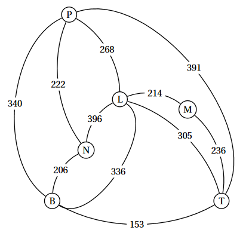
Chemins et cycles
Chemins et cycles
Dans un graphe donné, une chaîne (graphe non-orienté) ou un chemin (graphe orienté) reliant un sommet \(u\) à un sommet \(v\) est une séquence finie de sommets reliés deux à deux par des arcs/arêtes et menant de \(u\) à \(v\).
Un chemin est dit simple s'il n'emprunte pas deux fois le même arc/arête, et élémentaire si il ne passe pas deux fois par le même sommet.
Un chemin simple reliant un sommet à lui même et contenant au moins un arc est appelé un cycle(graphe non-orienté) ou un circuit(graphe orienté).
Exemple
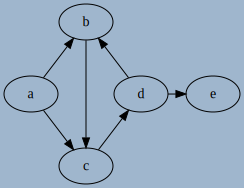
Sur le graphe ci-dessus, a -> c -> d -> e est un chemin de a à e, mais il n'est pas unique.
On peut aussi avoir :
a -> b -> c -> d -> ea -> c -> d -> b -> c -> d -> e- et tous les chemins empruntant plusieurs fois le cycle
b -> c -> d -> b
Il n'existe par contre pas de chemins menant de d à a.
Le chemin b -> c -> d -> b est un circuit.
Longueur d'un chemin et distance entre deux sommets
La longueur d'un chemin est définie comme étant le nombre d'arcs/arêtes composant ce chemin.
La distance entre deux sommets est la longueur du plus petit chemin reliant ces deux sommets. Par convention la distance entre un sommet et lui-même est 0, et n'est pas définie s'il n'existe pas de chemins entre les deux sommets.
Exemple
Dans le graphe précédent :
- Le chemin
a -> b -> c -> d -> eest de longueur 4. - La distance entre
aeteest 3 (par le chemina -> c -> d -> e).
Connexité
Connexité
Un graphe non-orienté est dit connexe si il existe un chemin entre deux sommets quelconque du graphe (autrement dit il est en un seul morceau).
Lorsqu'un graphe non-orienté est composé de plusieurs morceaux, on chaque morceau est appelé une composante connexe du graphe.
Exemple

Le graphe ci-dessus n'est pas connexe, mais possède deux composantes connexes : \({0;1;2;3;4}\) et \({5;6;7;8}\).
Warning
- Il existe des définitions similaires pour les graphes orientés (faible connexité et forte connexité), mais elles dépassent le cadre du programme.
- Un arbre est un graphe connexe acyclique.
Graphes Eulériens
Chaîne/Chemin Eulérien
Une Chaîne/Chemin Eulérien(ne) ou Parcours Eulérien est une chaîne/chemin qui passe une fois et une seule par chaque arête du graphe.
Un Cycle/Circuit Eulérien, ou une Tournée Eulérienne, est un cycle qui parcoure toutes les arêtes/arcs du graphe une et une seule fois (en revenant au sommet initial)
Trouver des Chemins Eulériens
Pour chacun des graphes suivants, trouver lorsque c'est possible une chaîne eulérienne / un parcours eulérien ( ce qui revient à tracer le graphe sans lever le stylo, en ne passant qu'une et une seule fois par chaque arête) :
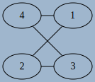
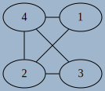
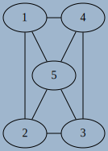
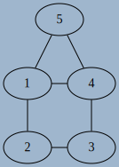
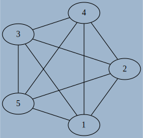
A venir !
Théorème d'Euler
Pour un graphe non-orienté, le théorème d'Euler énonce :
- Un graphe connexe admet un parcours eulérien si et seulement si ses sommets sont tous de degré pair sauf au plus deux.
- Un graphe connexe admet un circuit eulérien si et seulement si tous ses sommets sont de degré pair.
Que peut-on conclure alors pour le problème des ponts de Königsberg ?